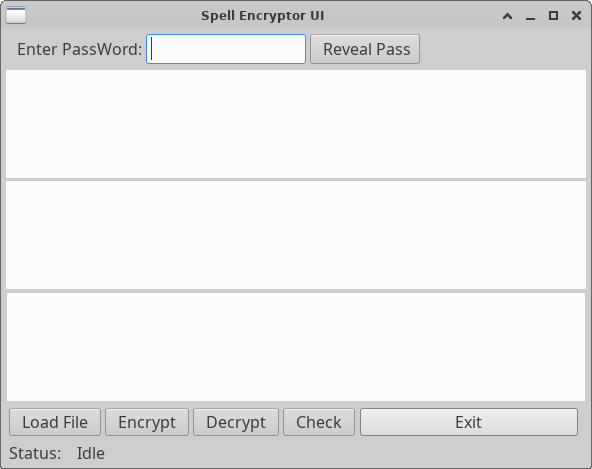

This disguises the fact that an encryption is used. (Discounting the fact
that the cyphertext makes limited sense.)
An encryption algorithm that turns this:
The greatest Enemy of Knowledge is not ignorance, it is the illusion of
knowledge.
Into this:
Nonagon waxy Unimplemented whitecap Clinically dionysos bussey nootka,
constitutionals colb kirkwood befitting whitecap clinically.
A dictionary is indexed into the original file, and the indexes are
'encrypted' The new index is untangled from the dictionary, which yields a
different text. The decryption does the reverse.
Strength: strong enough to withstand any, but the most resource intensive attacks.
The variable strength is also a function of the password quality.
This encryption hides the fact that the text is encrypted. Because it
uses plain text intermediary, it is can be deployed seamlessly into
any context, including email, text message, document or attachment.
The program can be driven from the command line. Both encrypt / decrypt
function write to stdout, unless specified otherwise with the -o option.
Usage: spellcrypt.py [options] [infile] [outfile]
Options:
-h, --help show this help message and exit
-e, --encrypt encrypt data
-d, --decrypt eecrypt data
-i infname, --in=infname
read from file
-o outfname, --out=outfname
write to file; stdout if '-' specified.
-s instring, --str=instring
string to operate on (quote if space or newline)
-p pass, --pass=pass password to use
-f, --force force overwrite
-q, --quiet print fewer status messages
-v, --verbose status message verbosity
-z, --zoo show password quality
-g dlevel, --debug=dlevel
debug output level
-m dmask, --mask=dmask
debug output mask
Use filename '-' for stdin
System Requirements:
o Python 3 (as of Mar 3 2021)
For the GUI:
o PyGObject and dependencies
The screen shot below shows a text file loaded into the top window. The middle
window shows the encrypted text after pressing the Encrypt button. The
Decrypt feature allows verification of text, and the 'Check' button
compares the top edit box text with the button box text.
The encrypted content then can be copied from the middle window into an
email / document or any transmission.

License: Open Source, FreeWare
// EOF